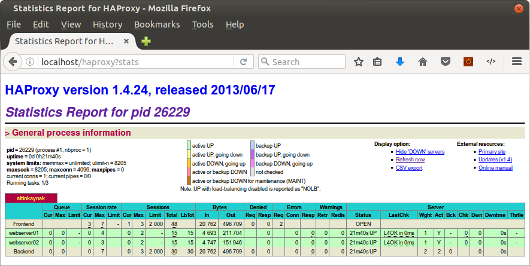
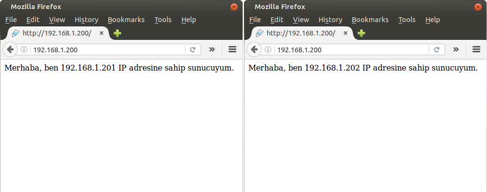

HAProxy nedir?
HAProxy (High Availability Proxy), bir yük dengeleme görev yöneticisidir. Birçok servis için yük dengeleme, yüksek erişilebilirlik ve proxy gibi hizmetleri ücretsiz, güvenli olarak sunmaktadır. Stabil versiyonu 1.6'dır.
Bu yazı da ise Ubuntu üzerine HAProxy 1.4.24 kurulumu gerçekleştirerek aşağıda yer alan yapıyı oluşturacağız.

HAProxy sunucusu: 192.168.1.200
Webserver 1: 192.168.1.201
Webserver 2: 192.168.1.202
Tüm sunuculara web server kurulumunu gerçekleştirdim.
HAProxy kurulumu
Ubuntu deposunda tanımlı olduğundan dolayı direkt apt-get ile kurabilirsiniz.
mustafa@altinkaynak:/# apt-get install haproxy
Kurulum işleminin ardından aşağıdaki komut ile birlikte versiyon kontrolü sağlayabilirsiniz.
mustafa@altinkaynak:/# haproxy -v
HA-Proxy version 1.4.24 2013/06/17
Copyright 2000-2013 Willy Tarreau <w@1wt.eu>
HAProxy'i etkinleştirmek için /etc/default/haproxy dosyasında yer alan ENABLED değerini 1 olarak değiştirmeniz gerekmektedir.
ENABLED=1
Artık HAProxy servisi için etkinlikler geldi.
mustafa@altinkaynak:/# service haproxy
Usage: /etc/init.d/haproxy {start|stop|reload|restart|status}
HAProxy yapılandırma
Herşeye başlamadan önce mevcut HAProxy konfigurasyon dosyasını yedekleyelim.
mv /etc/haproxy/haproxy.cfg{,.original}
Artık haproxy.cfg adında yeni bir konfigurasyon dosyası oluşturarak burada işlem gerçekleştirelim.
global
log /dev/log local0
log 127.0.0.1 local1 notice
maxconn 4096
user haproxy
group haproxy
daemon
defaults
log global
mode http
option httplog
option dontlognull
retries 3
option redispatch
maxconn 2000
contimeout 5000
clitimeout 50000
srvtimeout 50000
listen altinkaynak 127.0.0.1:80
mode http
stats enable
stats uri /haproxy?stats
balance roundrobin
option httpclose
option forwardfor
server webserver01 192.168.1.201:80 check
server webserver02 192.168.1.202:80 check
Bu sürüm için geçerli konfigurasyon açıklamasına buradan ulaşabilirsiniz.
Şimdi HAProxy dashboard sayfamıza göz atalım. Aşağıdaki göreceğiz üzere tüm servislerimiz yerlerini almış ve UP/DOWN durumları zamansal olarak gösterilmiştir. Servisler üzerinde açılan session sayısını da görebilmekteyiz.

Sunucuların up/down durumlarında e-posta bildirimi almak isteyebilirsiniz. O zaman güzel bir haber vereyim. HAProxy 1.6 sürümünde bildirim desteği gelmiştir. Ancak 1.4 sürümünde olmadığından dolayı bu yazıda yer veremiyorum.
HAProxy'in bize sunmuş olduğu yük dengelemeyi de test edelim. Artık tüm trafiği HAProxy sunucusu üzerine (192.168.1.200) üzerine yönlendiriyoruz. Ben farkı anlayabilmek açısından giriş sayfalarına hangi sunucuya bağlantı yaptığımı yazdırdım.

Sonuç olarak HAProxy en uygun olan sunucuya beni yönlendirdi.